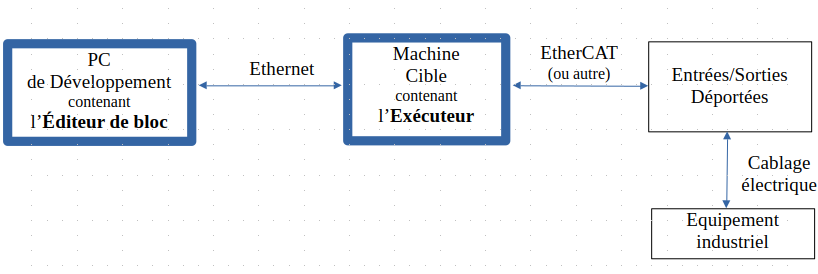

Blocaïne est une plateforme logicielle dédiée àl'automatisation des procédés industriels.

Votre navigateur ne supporte pas la lecture de vidéos. Démo...
Caractéristiques
Avancement du projet:
Documentation: